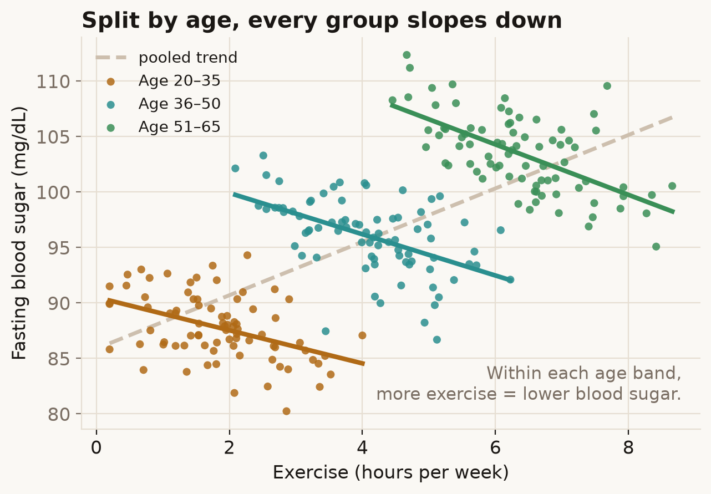

A pattern that holds inside every group can point the opposite way once you blend the groups into one pile. The trend doesn't change — what changes is whether you're looking at the groups or the lump.
Try it
Picture a health study plotting weekly exercise against fasting blood sugar (a diabetes-risk marker). Drag the slider from Ignore age to Reveal age.
What's going on
Ignore age and the line slopes up: more exercise, higher blood sugar — as if exercise were bad for you. Split the same dots by age band and every band slopes down, the way you'd expect. Nothing about the data changed; only whether we accounted for age did.
Age is wired to two things at once here. Older people in this sample exercise more, and they run higher blood sugar. So when you ignore age, exercise quietly stands in for age, and age drags blood sugar up. The pooled line measures the wrong thing. Hold age fixed by splitting into bands and exercise gets to show its real, downward effect.

In the real world
This is not just a teaching toy. In 1986 Charig and colleagues compared two kidney-stone treatments in the BMJ. Keyhole surgery won overall, yet open surgery won for small stones and for large stones — it took both subgroups but lost the total.
| Group | Open surgery | Keyhole (PCNL) |
|---|---|---|
| Small stones | 93% (81/87) | 83% (234/270) |
| Large stones | 73% (192/263) | 69% (55/80) |
| Overall | 78% (273/350) | 83% (289/350) |
The confounder is which patients got which treatment: roughly three-quarters of the easy (small) stones went to keyhole and three-quarters of the hard (large) stones went to open surgery, so keyhole's overall figure was built from an easier caseload. The same shape made headlines in the 1973 Berkeley admissions case, where the university looked biased against women overall but slightly favoured them department by department.
How not to get fooled
Plot the subgroups, not just the pooled line. Ask what else changes along the x-axis — here, age moved with exercise. And treat any overall rate as a mixture: the mixing proportions can flip the headline. Whether to trust the pooled trend or the subgroups is a causal question about why the confounder is there, not a numerical one.
Sources
- E. H. Simpson (1951), The Interpretation of Interaction in Contingency Tables, JRSS B, 13(2): 238–241.
- C. R. Blyth (1972), On Simpson's Paradox and the Sure-Thing Principle, JASA, 67(338): 364–366. doi
- P. J. Bickel, E. A. Hammel & J. W. O'Connell (1975), Sex Bias in Graduate Admissions: Data from Berkeley, Science, 187: 398–404. doi
- C. R. Charig et al. (1986), Comparison of treatment of renal calculi…, BMJ, 292: 879–882. doi
- R. A. Kievit et al. (2013), Simpson's paradox in psychological science: a practical guide, Front. Psychol., 4: 513. doi